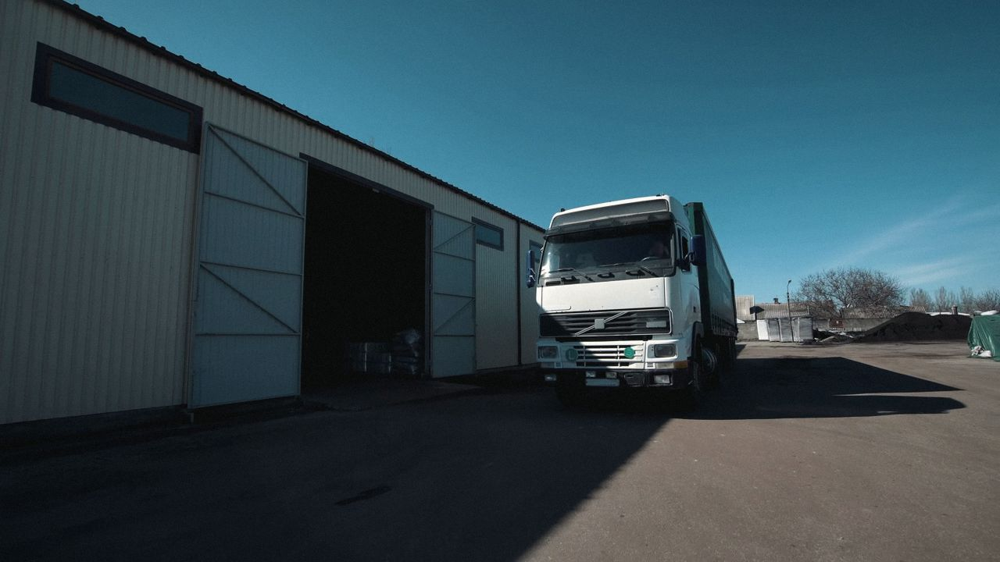

Plan
Your goal, budget and limits become a short plan. The policy engine checks every step before anything runs.
Give it an outcome in plain English. It plans the work, does it through APIs, websites and desktop apps, checks the real result — and tells you what happened.
ScrollOne PC. Every business in its own lane.
(02) The idea
Built around one brief: a reliable local operator for a few businesses — fewer than ten users, one PC, many workspaces.
One dedicated PC in your office runs an operator you direct in plain English. It works inside the budget and limits you set, keeps every business in its own workspace, parks what it cannot finish, and only calls a task complete when the real system shows the result.
(03) How it works
Your goal, budget and limits become a short plan. The policy engine checks every step before anything runs.
Steps run through APIs, browsers and desktop apps — the way a staff member would, with a checkpoint before and after.
The result is checked in the real system. A model’s confidence is never treated as evidence.
You get an honest report with the evidence — including every failure, reported as a failure.
(04) Abilities
Twelve requirements from the brief. Hover a row to see it at work.
“What were sales this month for business A?” — answered from your own data, with the rows it used.
One short instruction with a budget and limits. No step-by-step. Limits enforced in code.
Operates third-party websites and desktop apps the way your staff do.

Applies your written rules and fills in the right form. Unclear cases go to a person.
Watches listing sites, prepares a full response, and holds it for your review.
Gathers information from the web and reports with sources, every Monday at 7 am.
Local transcription and a suggested answer on screen within a few seconds.
From instructions, documents and a few demonstrations. No developer each time.
Parks a blocked task, keeps working on others, retries later.
Approve, reject or complete a blocked step from your phone.
Each business keeps its own data, logins, rules and history.
Spending limits, approval gates, emergency stop and a full audit log.
(05) Live demo
Run a task and press Kill process mid-step. On resume, verified steps are skipped from their checkpoints — nothing is done twice. When it hits a limit, the request appears on the phone.
Task state is safe in the checkpoint store. Press Resume.
Self-hosted notifications over your own VPN
(06) Workspaces
Each business has its own data, logins, rules and history. One shared model server, no virtual machine per business. Isolation is enforced in code on every call.
Sales, stock, online orders
Leases, invoices, tenants
Quotes, plans, site photos
Wholesale, freight, stock
(07) Hard controls
Per task, per workspace and per day. Anything over a limit stops and asks.
Payments, submissions and customer emails wait for a person.
One press on the dashboard or phone halts every task and locks the tools.
Every plan, tool call, screenshot, approval and result. Append-only.
Nightly encrypted backups, with a restore drill tested onto a clean drive.
It tries only what you permit, then pauses and notifies a person.
(08) A week with the operator
(09) While you’re busy
(10) Live call assistance
Speech and a small answer model get priority on the graphics card, so background tasks slow down — not your call. Every suggestion shows the document it came from.
(11) A day at the office
Nine moments from one simulated day across six businesses — each with the status the operator would report.
(12) Delivery
Tests use cases I have not seen. A model’s confidence is never evidence.
Architecture, model choice, hardware specification, test plan, fixed quote and a recorded proof run.
Local models, dashboard, plain-English tasks, two workspaces, permissions, audit log, backups, emergency stop.
Systems with no integration, forms from documents and photos, parked-task retry, phone approvals.
Procedures learned from instructions, documents and demonstration. Live call transcription and answers.
Security review, prompt-injection tests, restore drill, documentation, training, all code and credentials.
In total · full scope included
(13) Your questions
Yes. llama.cpp and vLLM run on ROCm, and Whisper runs locally. vLLM tensor parallel prefers 2 or 4 cards, so with 3 cards layers are split in llama.cpp, or each card gets its own job. Confirmed on your exact cards in Phase 0.
48GB of graphics memory and 64GB of system RAM. 96GB of graphics memory is recommended so all models stay loaded together.
One shared model server, with a separate database schema, vault, browser profiles and light container per workspace. The workspace ID is checked in code on every tool call.
Local: sourced answers, document and photo rules, known procedures, research summaries and transcription. Cloud, only if you switch it on: long planning on unfamiliar sites and hard vision.
Target 2 to 3 seconds from speech to on-screen answer, with GPU priority for speech. The exact figure is measured and agreed in Phase 0.
A self-hosted ntfy server and approval page on your PC, reached over your own WireGuard VPN. No third party holds your data.
About 70 to 85% on first unsupervised runs after 3 to 5 demonstrations on a stable site, rising after corrections. Measured rates are reported, not promised.
Only me, full time, about 40 hours per week, with daily commits to your repository.
Operator
A film about quiet work
No task was repeated in the making of this film.
(14) Next step
Three days. A$1,200 fixed. Architecture, hardware spec, test plan, a fixed quote — and a recorded proof run of a task that survives being killed.
Watch the proof run